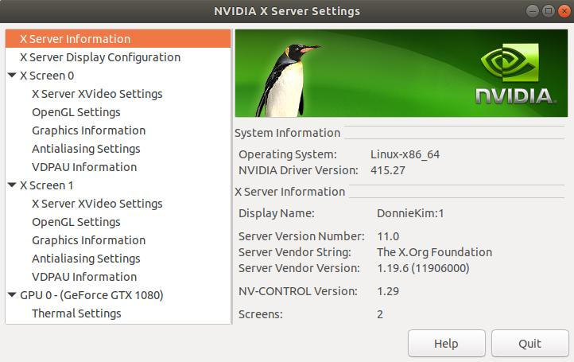

Stimulus¶
Overview¶
The stimulus schema is a self-contained application that generates, presents, and records visual stimuli using PsychToolbox.
Monitor Requirements¶
In order to view the stimulus, one needs 2 monitors at minimum while setting one of the monitors’ xscreen number higher than the other (e.g. xscreen 0 for monitor 1 and xscreen 1 for monitor 2.) This process can be tricky depending on how you initially installed your monitors and set up your xscreens.
If you have a GPU on your machine, one way to check whether you have 2 xscreens is simply checking Nvidia X Server Settings
{kind=link}
As you can see above, there are 2 x Screens set up.
It is best to consult with Chris Turner or Saumil Patel to configure xscreens.
Software Requirements¶
Stimulus package is written in MATLAB, thus all the packages required below must be known to MATLAB environment.
MATLAB (MUST BE R2016b or above)
- PsychToolbox : Stimulus package uses PsychToolbox as a backend
- datajoint : It is best to simply install via Add On on MATLAB console
Following packages must be cloned and added to PATH of the MATLAB
- mym : datajoint extension to recognize data type BLOB
- pipeline : need to be able to access experiment module
- stimulus : stimulus package itself
In order to make add these packages to PATH, click Set Path on MATLAB console and Add with Subfolders. See image below for what needs to be added

How to run existing stimulus¶
Unless you need to generate your own stimulus kind, you will simply run the exsiting stimulus. Here, we will demonstrate how to run manually on your computer. Note, when you actually run the experiment, you will do it through 2p master MATLAB panel. Below steps are, however, still useful when you generate your own stimulus and need to debug/troubleshoot.
Step 1: Initialize screen¶
1 | stimulus.open
|
Step 2: Generate stimulus conditions and queue trials¶
Stimulus trials are generated and queued by the scripts in the +stimulus/+conf directory. You need to know which configuration script needs to be run.
For example, to prepare the matisse2 stimulus, execute
1 | stimulus.conf.matisse2
|
While the stimulus is loaded, you will see a sequence of dots . and asterisks *, which respectively indicate whether the conditions are computed anew or are loaded from the database. Some stimuli take a long time to compute and you might like to run the configuration before you begin the experiment. On subsequent runs, the computed stimuli will be loaded from the database and will not take as long.
Step 3. Run the stimulus¶
The stimulus must be run for a specific scan in the experiment.Scan table. Table experiment.Scan contains a dummy entry that can be used for testing. Its primary key is struct(‘animal_id’, 0, ‘session’, 0, ‘scan_idx’, 0). During the experiment, the correct scan identification must be provided.
1 | stimulus.run(struct('animal_id', 0, 'session', 0, 'scan_idx', 0), false)
|
Note, false is given so that we do not log our dummy entries to stimulus.Trial() table.
Step 4. Interrupt and resume the stimulus¶
While the stimulus is playing, you can interrupt with Ctrl+c. The stimulus program will handle this event, cancel the ongoing trial, and clear the screen. To resume the stimulus, repeat the stimulus.run call above. Or to queue a new set of trials, run the configuration script again.
Stimulus Repository Structure¶
The structure of Stimulus repository can be confusing for new users and needs to be explained. The basic structure can be broken down as the following tree:
blahasdasd
Designing a New Stimulus¶
There are cases where one needs to design a new stimulus. There are two parts in designing:
- Stimulus Display - HOW the stimulus is displayed on the monitor/projector
- Stimulus Configuration - PARAMETERS for the stimulus one designed.
Often times, one doesn’t probably need to design a new stimulus display but simply modify the configuration file.
Here, we demonstrate a demo of designing a single dot stimulus (Many thanks to Jiakun for her contribution!)

single dot stimulus demo